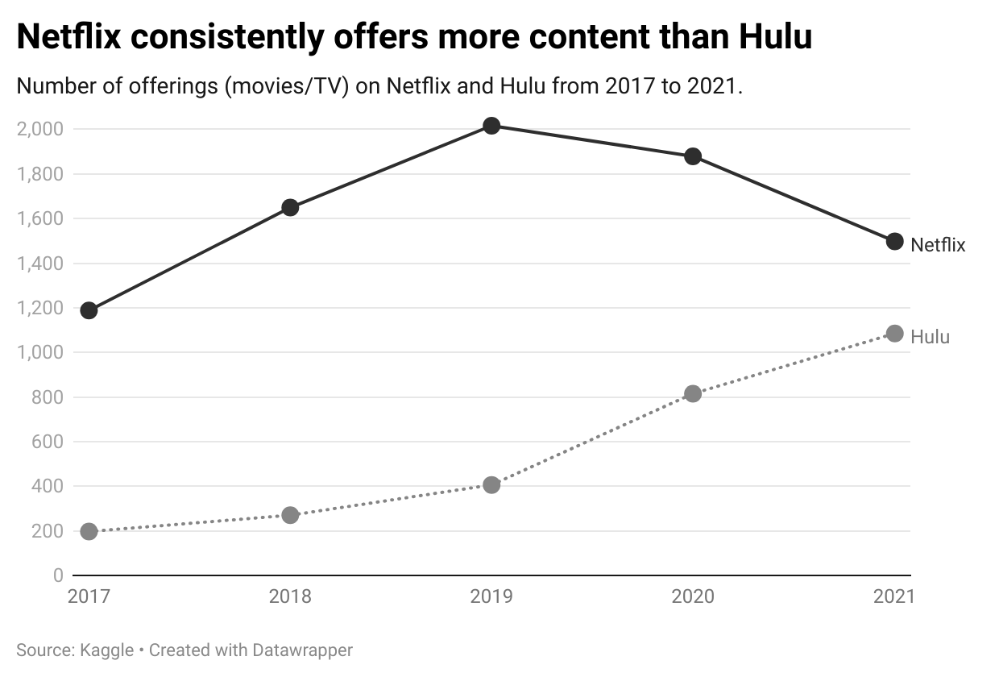
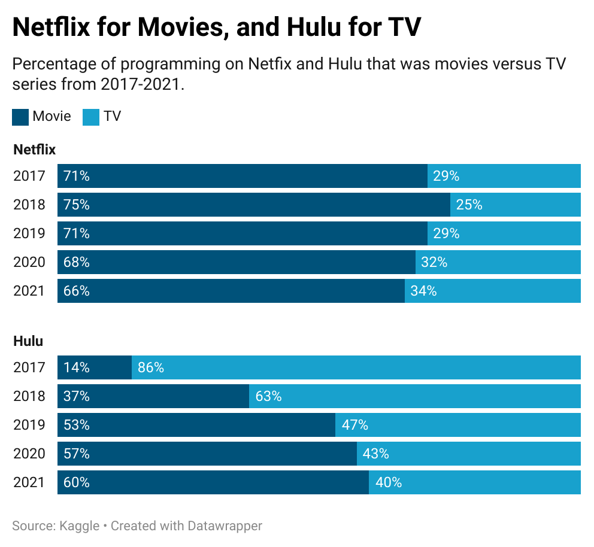

We will start our exploration by looking at how much content each streaming service provided from 2017-2021, keeping in mind the advent of the COVID pandemic in early 2020. We will then take a closer look at this content, determining how many movies versus TV series were offered.
How many different things can we watch?
Both Netflix and Hulu present a variety of movies and TV shows, including those created by the streaming services themselves, and others that were created elsewhere and re-broadcast.
Netflix content has been 1200 offerings or more since 2017, peaking with over 2000 items in 2019 and then declining during the pandemic years, resulting in approximately 1500 programs in 2021. Hulu's offerings have steadily increased since 2017, when they had only 200 offerings. In contrast to Netflix, Hulu's programming increased in 2020 and 2021, with over 1000 programs available in 2021.
Netflix shows more movies, and Hulu shows more TV (or does it?)
As we saw in the introduction, Netflix started out as a movie service, and Hulu started out as a way for users to watch TV.
Netflix started as a movie service, and has continued to provide more movies than TV series. Interestingly, from 2017 to 2021, Hulu's distribution of content has changed from predominantly TV to a dominance of movies. Is Hulu turning into Netflix?